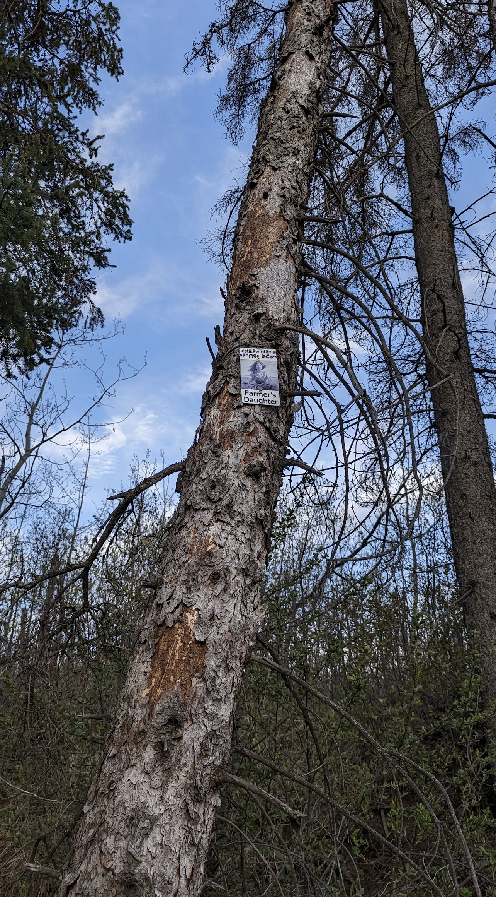

"Farmer's Daughter — a possessive noun phrase 'his/her (the farmer's) daughter', built from the agent noun okistikêw 'farmer' and the obviated possessed noun otânisa 'his/her daughter (obv.)'."

Wall crop of the Farmer's Daughter plaque: purple syllabics ᐅᑭᐢᑎᑫᐤ ᐅᑖᓂᓴ above a tinted portrait of the rider; black 'Farmer's Daughter' caption below.
Farmer's Daughter is one of those MTB trail names that lives in the tradition of just calling it like you see it: a long, open, gently‑rolling line that feels like riding across the back forty of an old prairie farm, the kind a farmer's daughter would have grown up biking out to the field on. The plaque art leans straight into the trope — a sepia‑into‑purple portrait of a young woman on a battered single‑speed, white shirt and dark overalls, wheat in the background, the painted‑over‑a‑photograph aesthetic of an old farm‑family album. It is the most figurative plaque on the wall; almost every other one is a silhouette or an abstract motif.
The carved Cree above the portrait is precise: okistikêw otânisa, 'the farmer's daughter (obv.)'. okistikêw is the agent noun built from kistikêw 's/he farms, s/he plants' — strictly 'one who plants', so the kind of farm being named here is the planting / market‑garden / harvest kind, not the ranching kind (which would more naturally use otêhtêwâpêkinikêwa or similar). otânisa is the obviative form of otânis 'his/her daughter' — required because both the farmer and the daughter are 3rd‑person, and Plains Cree grammar marks one of them out as 'the other one' so listeners can keep track of who's who. The English possessive 's' has no machinery in Cree; the relationship rides entirely on the kinship stem ‑tânis 'daughter' carrying the same o‑ possessor as the farmer carries his actor o‑. Two o‑'s, two roles, one phrase.
Like every other plaque on this wall, the trail sits on ᓀᐦᐃᔭᐤ ᐊᐢᑭᕀ Nêhiyaw‑Askiy (Plains Cree territory). The Plains Cree had their own long history of kistikêwin (farming / cultivation) on this land — corn, squash, beans where the river bends, gathering and seasonal moves elsewhere — long before the homesteader idiom that 'Farmer's Daughter' borrows from. Naming the trail in nêhiyawêwin sets the English MTB nickname in conversation with that older history of working the land here.
Explore the trail on Trailforks, with a local preview from the uploaded GPX.
itwêwina headword (CW). Strip the o‑ off the plaque's first word and this is what you have left: the verb of farming itself.
Companion abstract noun in the same family: okistikêw 'the farmer (person)' vs kistikêwin 'the farming (activity)'.
Same ‑tânis dependent stem as the plaque's otânisa, but with the 1st‑person possessor ni‑. No obviative ‑a because the speaker (1sg) is the possessor — no clash of 3rd persons.
| English | SRO | Syllabics |
|---|---|---|
| Farmer's daughter (the farmer's specific daughter, obv.) | okistikêw otânisa | ᐅᑭᐢᑎᑫᐤ ᐅᑖᓂᓴ |
| Farmer (the agent noun, animate) | okistikêw | ᐅᑭᐢᑎᑫᐤ |
| S/he farms, s/he plants | kistikêw | ᑭᐢᑎᑫᐤ |
| My daughter | nitânis | ᓂᑖᓂᐢ |
| Your daughter | kitânis | ᑭᑖᓂᐢ |
| His/her daughter (proximate, when no other 3rd person is in the clause) | otânisa | ᐅᑖᓂᓴ |
SRO uses ê î ô â. Syllabics match the SRO shown.
Dialectal preferences may affect minor spelling choices; check local norms for signage.
References: itwêwina, Online Cree Dictionary, Plains Cree Dictionary
Each sign is 3D printed in Edmonton. Want one for your own trail, cabin or wall?